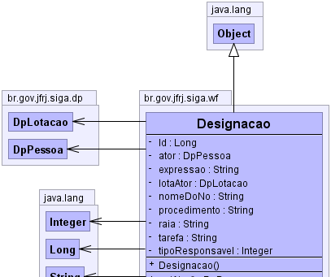
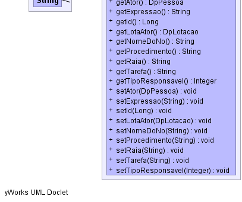

br.gov.jfrj.siga.wf.Designacao
br.gov.jfrj.siga.wf.Designacao
|
|||||||||
| PREV CLASS NEXT CLASS | FRAMES NO FRAMES | ||||||||
| SUMMARY: NESTED | FIELD | CONSTR | METHOD | DETAIL: FIELD | CONSTR | METHOD | ||||||||
java.lang.Object
public class Designacao
Esta classe representa uma designação de responsabilidade e é utilizada na view pesquisarDesignação.jsp
Designação de Tarefas (Cadastro de Responsabilidades)
1.CRIAÇÃO
2.OBJETIVO
3.UTILIZAÇÃO
4.COMPONENTES
5.BANCO DE DADOS
6.FUNCIONAMENTO BÁSICO
7.OBSERVAÇÕES
1.CRIAÇÃO
Funcionalidade iniciada na iteração 05/10/2009 a 16/10/2009 do SIGAWF.
2.OBJETIVO
Configurar quem são os responsáveis por cada tarefa do processo.
3.UTILIZAÇÃO
Acesse a opção "Designar Tarefas" e o processo desejado no quadro de tarefas
localizado na página inicial do SIGA-DOC.
4.COMPONENTES
4.1 pesquisarDesignacao.jsp (/sigawf/WebContent/WEB-INF/page/workflow/)
Interface do usuário de configuração e pesquisa de desgnações
4.2 WfDesignacaoAction.java (/sigawf/src/br/gov/jfrj/siga/wf/webwork/action/)
Executa a lógica da funcionalidade de designação de resposabilidades.
Possui uma classe interna que define o tipo de responsável.
4.3 Designacao.java (/siga-wf/src/br/gov/jfrj/siga/wf/)
Representa uma designação de responsabilidade
4.4 xwork.xml (/sigawf/src/)
Configuração do webwork que realiza a conexão entre a interface do usuário e
lógica da designação de tarefas.
4.5 inbox.jsp (/sigawf/WebContent/WEB-INF/page/workflow/)
Interface de acesso à funcionalidade
5.BANCO DE DADOS
5.1 CORPORATIVO.CP_CONFIGURACAO
Registra as informações comuns entre configurações.
Determina se uma configuração está ativa ou não dentre outras informações.
5.2 SIGAWF.WF_CONFIGURACAO
Registra a configuração da designação da tarefa
6.FUNCIONAMENTO BÁSICO
6.1 PESQUISA
Quando o usuário acessa a página inicial, seleciona a opção "Designar Tarefas"
e o processo desejado, o inbox.jsp chama a action pesquisarDesignação configurada
no xwork.xml. Nesse momento o método WfDesignacaoAction.aPesquisarDesignacao() é
chamado e retorna a página pesquisarDesignacao.jsp. A página pesquisarDesignacao.jsp
lê as listas de designação (com raias e sem raias) e a página é desenhada na tela do
usuário.
6.2 GRAVACAO
O usuário define as responsabilidades através dos componentes de seleção (seleção.tag)
e clica no botão gravar que ativa a action gravarDesignacao que, por sua vez, chama o
método WfDesignacaoAction.aGravarDesignacao(). Este método grava as designações e retorna
a página pesquisarDesignacao.jsp com as informações gravadas.
7.OBSERVAÇÕES
Maiores detalhes são encontrados no próprio código dos componentes responsáveis
pela funcionalidade de desiganção de tarefas.
|  |
|  |
| Field Summary | |
|---|---|
private DpPessoa |
ator
|
private java.lang.String |
expressao
|
private java.lang.Long |
Id
|
private DpLotacao |
lotaAtor
|
private java.lang.String |
nomeDoNo
|
private java.lang.String |
procedimento
|
private java.lang.String |
raia
|
private java.lang.String |
tarefa
|
private java.lang.Integer |
tipoResponsavel
|
| Constructor Summary | |
|---|---|
Designacao()
|
|
| Method Summary | |
|---|---|
DpPessoa |
getAtor()
Retorna o ator referente à designação. |
java.lang.String |
getExpressao()
Retorna a expressão de uma designação. |
java.lang.Long |
getId()
Retorna o ID da designação. |
DpLotacao |
getLotaAtor()
Retorna a lotação referente à designação. |
java.lang.String |
getNomeDoNo()
|
java.lang.String |
getProcedimento()
Retorna o procedimento referente à designação. |
java.lang.String |
getRaia()
Retorna a raia referente à designação. |
java.lang.String |
getTarefa()
Retorna a tarefa referente à designação. |
java.lang.Integer |
getTipoResponsavel()
Retorna o tipo de responsável desigando para a tarefa. |
void |
setAtor(DpPessoa ator)
Informa o ator referente à designação. |
void |
setExpressao(java.lang.String expressao)
Informa a expressão de uma designação. |
void |
setId(java.lang.Long id)
Informa o ID da designação. |
void |
setLotaAtor(DpLotacao lotaAtor)
Informa a lotação referente à designação. |
void |
setNomeDoNo(java.lang.String nomeDoNo)
|
void |
setProcedimento(java.lang.String procedimento)
Informa o procedimento referente à designação. |
void |
setRaia(java.lang.String raia)
Informa a raia referente à designação. |
void |
setTarefa(java.lang.String tarefa)
Informa a tarefa referente à designação. |
void |
setTipoResponsavel(java.lang.Integer tipoResponsavel)
Informa o tipo de responsável desigando para a tarefa. |
| Methods inherited from class java.lang.Object |
|---|
clone, equals, finalize, getClass, hashCode, notify, notifyAll, toString, wait, wait, wait |
| Field Detail |
|---|
private java.lang.String procedimento
private java.lang.String raia
private java.lang.Long Id
private java.lang.String tarefa
private java.lang.String nomeDoNo
private java.lang.String expressao
private DpPessoa ator
private DpLotacao lotaAtor
private java.lang.Integer tipoResponsavel
| Constructor Detail |
|---|
public Designacao()
| Method Detail |
|---|
public java.lang.Integer getTipoResponsavel()
public void setTipoResponsavel(java.lang.Integer tipoResponsavel)
public java.lang.String getProcedimento()
public void setProcedimento(java.lang.String procedimento)
procedimento - public java.lang.String getRaia()
public void setRaia(java.lang.String raia)
raia - public java.lang.String getTarefa()
public void setTarefa(java.lang.String tarefa)
tarefa - public java.lang.String getExpressao()
public void setExpressao(java.lang.String expressao)
expressao - public DpPessoa getAtor()
public void setAtor(DpPessoa ator)
ator - public DpLotacao getLotaAtor()
public void setLotaAtor(DpLotacao lotaAtor)
lotaAtor - public java.lang.Long getId()
public void setId(java.lang.Long id)
id - public void setNomeDoNo(java.lang.String nomeDoNo)
public java.lang.String getNomeDoNo()
|
|||||||||
| PREV CLASS NEXT CLASS | FRAMES NO FRAMES | ||||||||
| SUMMARY: NESTED | FIELD | CONSTR | METHOD | DETAIL: FIELD | CONSTR | METHOD | ||||||||